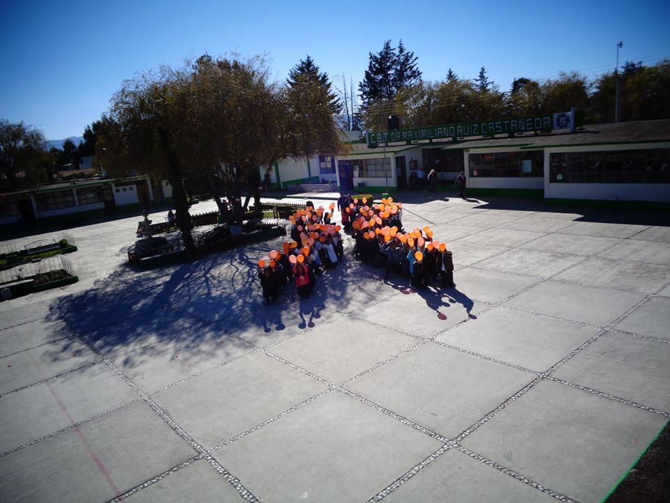
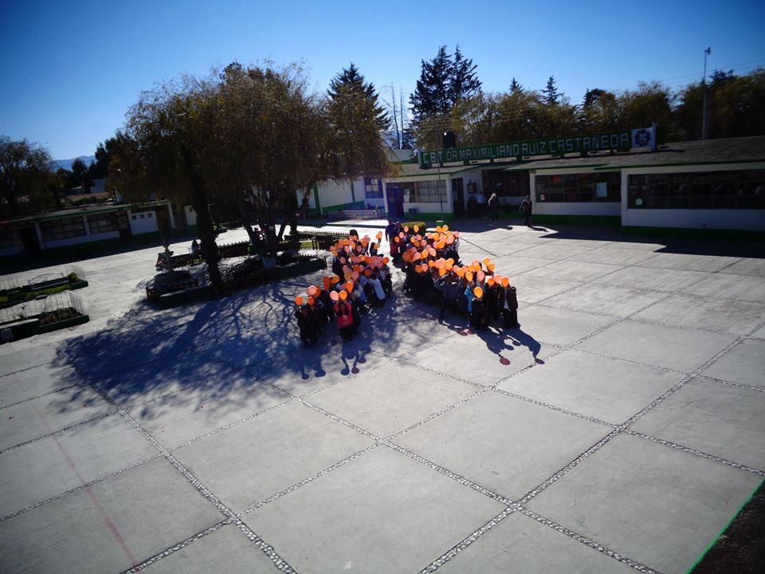

En los inicios del año de 1978 surgió en Jocotitlán la idea y la inquietud de crear una Secundaria Técnica Agropecuaria. En marzo de 1981 la comunidad de Padres de Familia, Alumnos y Maestros realizaron una solicitud dirigida al gobernador del Estado de México y el Profr.. Sixto Noguez Estrada, director General de Educación donde se firma el acuerdo para la creación del C.B.T.A No. 14 Dr. Maximiliano Ruiz Castañeda en el mes de junio de 1981; logrando con ello que fuera la primera escuela del nivel medio superior en el municipio. El C.B.T.A No. 14 inicia sus labores el día primero de septiembre de 1981 en un horario vespertino de 13:00 a 19:00 hrs., de lunes a viernes y el sábado con turno matutino de 8:00 a 13:00 hrs. La primera etapa de construcción se realiza en 198-1984 con la colaboración del H. Ayuntamiento de Jocotitlán.Esta institución en un inicio surgió como C.E.T.A. No. 11 y después de algunos meses, se transformó en C.B.T.A No. 14, denominación que cambio a C.B.T r. Maximiliano Ruiz Castañeda, en el año 1991.
Ser la mejor institución a nivel medio superior, con mayor demanda por la calidad de la educación que ofrece, cuyos egresados tengan un alto grado de competencia al reflejar conocimientos, valores y actitudes en la educación superior y sector laboral.
Ofrecer una educación integral de mejora continua formando bachilleres técnicos competentes, con un amplio sentido crítico, ético, creativo y humanista que impacten favorablemente en una sociedad dinámica y demandante.
 
Responsabilidad, honestidad, tolerancia, respeto, integridad, justicia, comunicación, solidaridad, paz, profesionalismo y equidad de género.